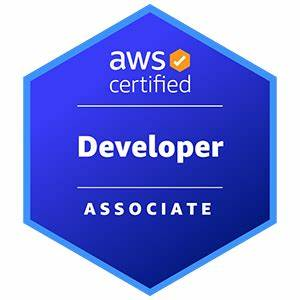
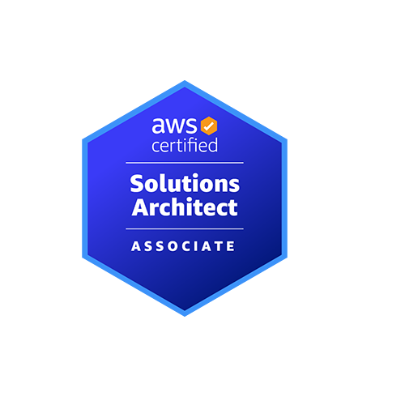
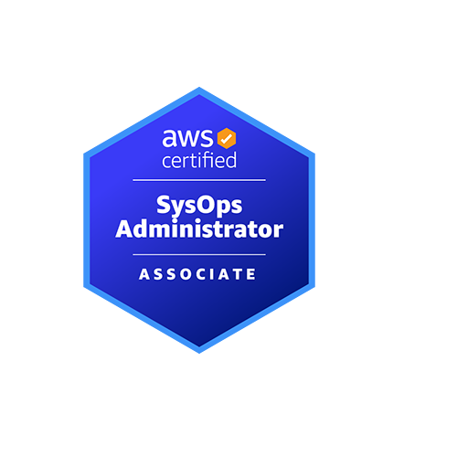
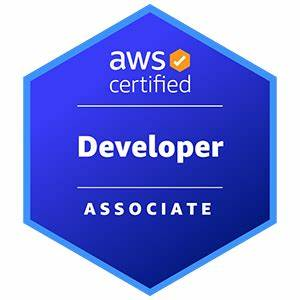
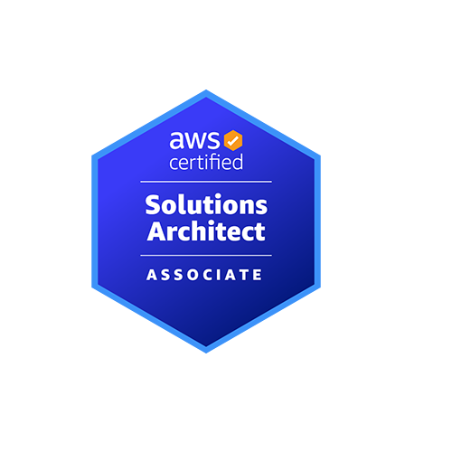
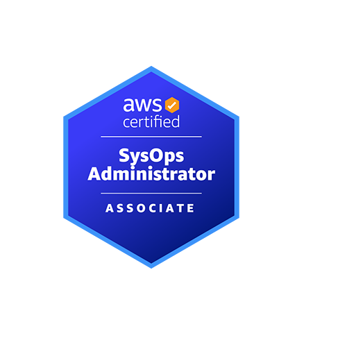

Ankush Kedar
AWS Developer & Engineer
Building scalable, secure, and cost-effective cloud solutions on AWS!
AWS Developer & Engineer
Building scalable, secure, and cost-effective cloud solutions on AWS!
Cloud Enthusiast | AWS Developer | Solution Architect
Hey, I am Ankush Kedar, a passionate and dedicated AWS Developer. My expertise lies in architecting, developing, testing, and deploying scalable and secure cloud solutions using the AWS ecosystem. I strive to design highly available, fault-tolerant, and cost-efficient cloud applications. I am always focused on automation, innovation, and best practices to drive digital transformation in modern enterprises. With a commitment to continuous learning, I enjoy working on challenging cloud-native problems that deliver measurable business value.
 





Email: kedarankush845@gmail.com
Mobile: +91 8379803650
LinkedIn: linkedin.com/in/ankush-kedar